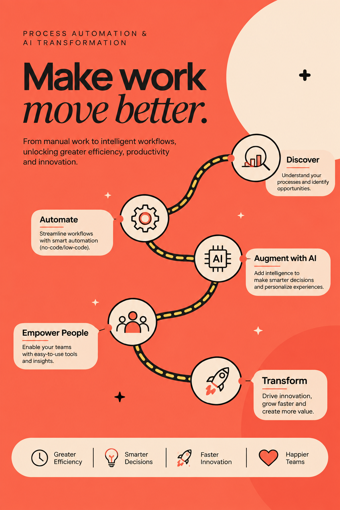
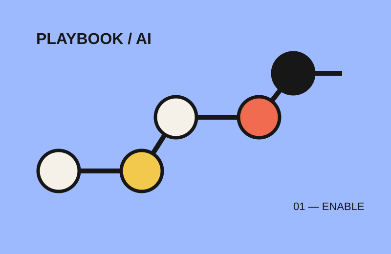
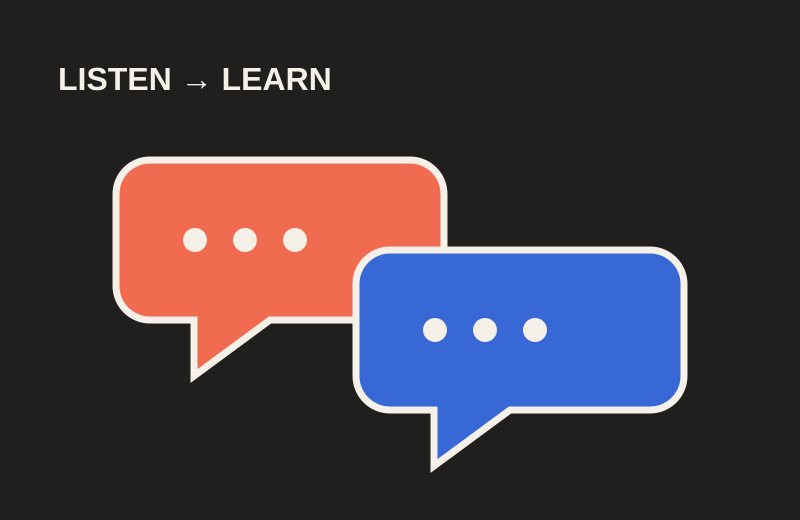
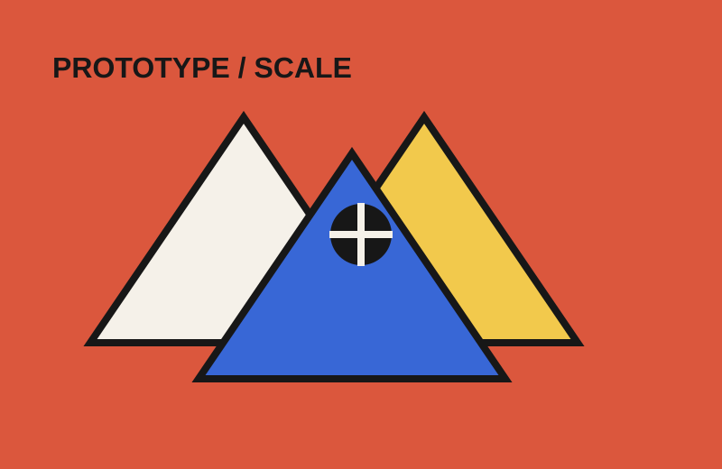
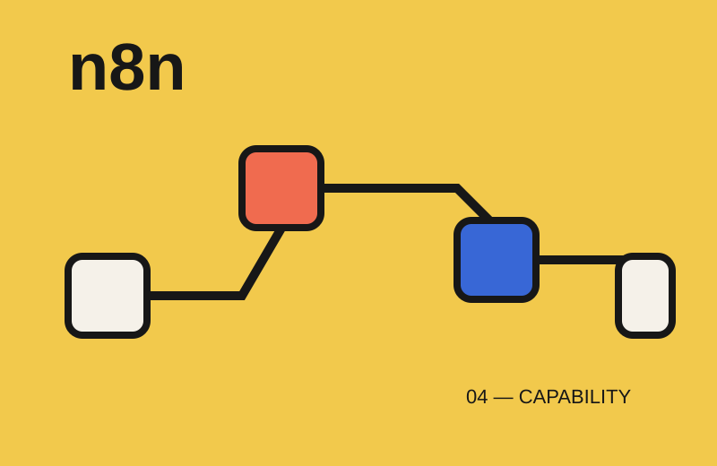

From manual work to scalable workflows
Redesign processes and remove repetitive coordination so teams can focus on higher-value decisions.
Evidence-led / verify metrics before launch01 Transformation / process automation
I help teams turn complex operations into scalable systems through process design, automation, and practical AI enablement.

02 Impact
How I create value across transformation work.
Redesign processes and remove repetitive coordination so teams can focus on higher-value decisions.
Evidence-led / verify metrics before launchCreate practical enablement, governance, and change routines that help teams use new capabilities responsibly.
Evidence-led / verify metrics before launchConnect feedback, testing, service design, and operational data to prioritize better experiences.
Evidence-led / verify metrics before launchClarify ownership, controls, KPI cadences, documentation, and continuous improvement mechanisms.
Evidence-led / verify metrics before launch03 Case studies
Selected transformation and automation initiatives.

01
An operating model for adoption, governance, and practical AI enablement.
ContextTeams needed a repeatable way to move from AI interest to responsible operating practice.
InterventionPlaybook design across discovery, prioritization, adoption, governance, and change management.
Toolsn8n · GPT · Claude · Slack · Asana · Google Workspace

02
Internal product testing that turns feedback into prioritized improvement opportunities.
ContextProduct teams needed a faster loop between internal testing, feedback quality, and decisions.
InterventionStructure feedback capture, synthesis, and prioritization around customer and operational signals.
ToolsForms · Slack · Asana · Product analytics

03
Give the business freedom to test ideas without creating fragile systems.
ContextBusiness teams needed autonomy to explore solutions while preserving scalability and control.
InterventionDefine lightweight prototypes, guardrails, handoffs, and a path from experiment to capability.
Toolsn8n · No-code tools · APIs · Process mapping

04
Move automation from isolated workflows into a governed, reusable operating capability.
ContextTeams needed a scalable way to automate recurring work while keeping ownership and controls clear.
InterventionEstablish patterns for discovery, build, documentation, monitoring, ownership, and adoption.
Toolsn8n · APIs · GPT · Slack · Google Workspace
04 Experience
Transformation, process, and project leadership.
Process transformation, audit, AI adoption, automation, process governance, and cross-company enablement in a global remote ecommerce environment.
Led process and project transformation across business, technology, customer experience, service design, and operational execution.
Designed and delivered complex technical solutions, translating client requirements into proposals and coordinated projects.
05 Capabilities
The disciplines behind the work.
Digital transformation · Operational excellence · Continuous improvement · Process redesign · AS-IS / TO-BE · Transformation roadmaps · Portfolio management · Benefits realization
Process automation · Applied AI · AI governance · Change management · Adoption and enablement · Business intelligence · Systems integration and APIs
n8n · GPT · Claude · Slack · Asana · Google Workspace · Agile · OKR · KPI management · Service design
06 About me
I turn complex operations into clearer, more capable ways of working.
I’m Javier Herranz Lazo, a process and transformation leader with more than 10 years of experience across ecommerce and telecommunications. I connect strategy, people, process, data, and technology to build scalable operating models, improve customer journeys, and make change stick.
Today, my focus is AI-enabled transformation: combining process redesign, automation, governance, and change management with tools like n8n, GPT, Claude, Slack, Asana, and Google Workspace. I help teams move from promising use cases to practical systems that improve execution.
I’m based in Santiago, Chile, and open to opportunities both locally and remotely. I also bring experience working with distributed teams and remote environments.
Start a conversation ↗07 CV
Background, scope, and education.
Download the current Spanish or English CV for a complete view of experience, education, certifications, and methods.
08 Start a conversation
✳Open to transformation, operational excellence, process automation, and AI-enabled operations opportunities in Chile and internationally.
javier.herranz.lazo@gmail.com↗+56 9 3118 6532 · WhatsApp↗